2026 Advanced Higher Mathematics - Paper 1 marking instructions
Source: Scottish Qualifications Authority (SQA) / Qualifications Scotland. This is a StemInteract HTML companion, not an official HTML edition. Selectable text is supplied alongside original page images. Use the images or original PDF for equations, powers, fractions, vector notation, tables and diagrams; text extraction cannot fully preserve mathematical layout.
Jump to a question
PDF page 1
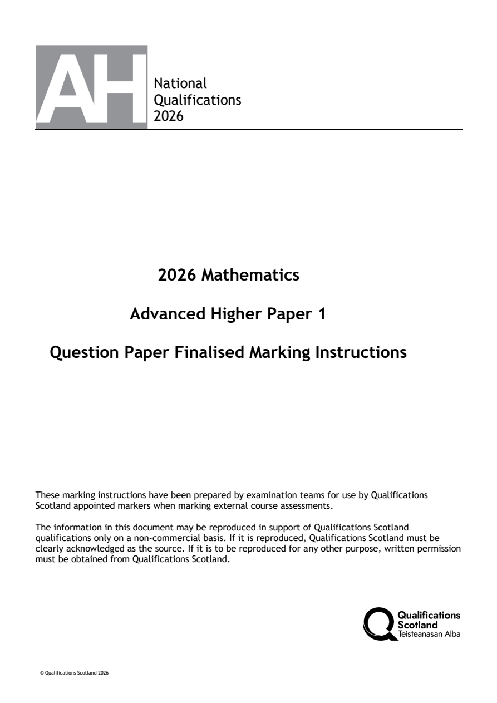
Selectable page text
National
Qualifications
2026
2026 Mathematics
Advanced Higher Paper 1
Question Paper Finalised Marking Instructions
These marking instructions have been prepared by examination teams for use by Qualifications
Scotland appointed markers when marking external course assessments.
The information in this document may be reproduced in support of Qualifications Scotland
qualifications only on a non-commercial basis. If it is reproduced, Qualifications Scotland must be
clearly acknowledged as the source. If it is to be reproduced for any other purpose, written permission
must be obtained from Qualifications Scotland.
© Qualifications Scotland 2026PDF page 2
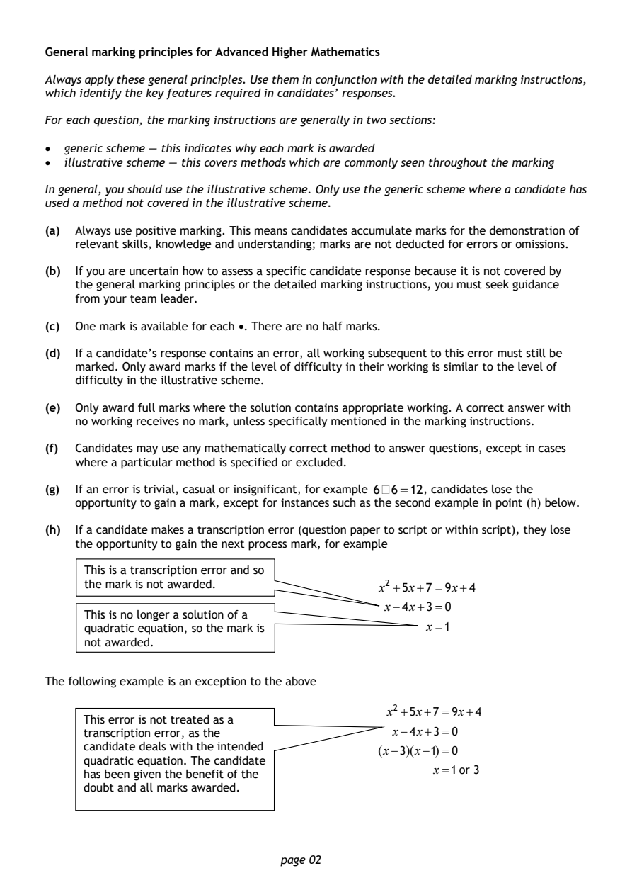
Selectable page text
General marking principles for Advanced Higher Mathematics
Always apply these general principles. Use them in conjunction with the detailed marking instructions,
which identify the key features required in candidates’ responses.
For each question, the marking instructions are generally in two sections:
• generic scheme — this indicates why each mark is awarded
• illustrative scheme — this covers methods which are commonly seen throughout the marking
In general, you should use the illustrative scheme. Only use the generic scheme where a candidate has
used a method not covered in the illustrative scheme.
(a) Always use positive marking. This means candidates accumulate marks for the demonstration of
relevant skills, knowledge and understanding; marks are not deducted for errors or omissions.
(b) If you are uncertain how to assess a specific candidate response because it is not covered by
the general marking principles or the detailed marking instructions, you must seek guidance
from your team leader.
(c) One mark is available for each •. There are no half marks.
(d) If a candidate’s response contains an error, all working subsequent to this error must still be
marked. Only award marks if the level of difficulty in their working is similar to the level of
difficulty in the illustrative scheme.
(e) Only award full marks where the solution contains appropriate working. A correct answer with
no working receives no mark, unless specifically mentioned in the marking instructions.
(f) Candidates may use any mathematically correct method to answer questions, except in cases
where a particular method is specified or excluded.
(g) If an error is trivial, casual or insignificant, for example 6´6=12, candidates lose the
opportunity to gain a mark, except for instances such as the second example in point (h) below.
(h) If a candidate makes a transcription error (question paper to script or within script), they lose
the opportunity to gain the next process mark, for example
This is a transcription error and so
the mark is not awarded. x² +5x+7=9x+4
x−4x+3=0
This is no longer a solution of a
quadratic equation, so the mark is x=1
not a warded.
The following example is an exception to the above
x² +5x+7=9x+4
This error is not treated as a
transcription error, as the x−4x+3=0
candidate deals with the intended (x−3)(x−1)=0
quadratic equation. The candidate
x=1 or 3
has been given the benefit of the
doubt and all marks awarded.
page 02PDF page 3
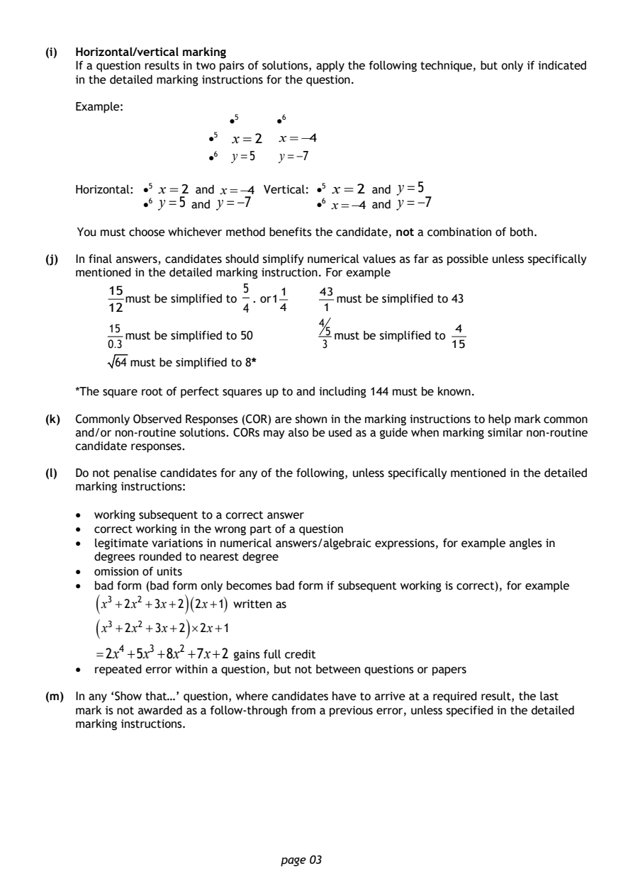
Selectable page text
(i) Horizontal/vertical marking
If a question results in two pairs of solutions, apply the following technique, but only if indicated
in the detailed marking instructions for the question.
Example:
•5 •6
•5 x =2 x=−4
•6 y=5 y=−7
Horizontal: •5 x = x rtical: •⁵ x = 2 and y =5
•6 y =5² a ^{a} n ⁿ d ^{d} y =⁼−⁻7⁴ ^{V} ^{e} •6 x=−4 and y =−7
You must choose whichever method benefits the candidate, not a combination of both.
(j) In final answers, candidates should simplify numerical values as far as possible unless specifically
mentioned in the detailed marking instruction. For example
15 5 1 43
must be simplified to . or1 must be simplified to 43
12 4 4 1
4
15 5 4
must be simplified to 50 must be simplified to
0.3 3 15
64 must be simplified to 8*
*The square root of perfect squares up to and including 144 must be known.
(k) Commonly Observed Responses (COR) are shown in the marking instructions to help mark common
and/or non-routine solutions. CORs may also be used as a guide when marking similar non-routine
candidate responses.
(l) Do not penalise candidates for any of the following, unless specifically mentioned in the detailed
marking instructions:
• working subsequent to a correct answer
• correct working in the wrong part of a question
• legitimate variations in numerical answers/algebraic expressions, for example angles in
degrees rounded to nearest degree
• omission of units
• bad form (bad form only becomes bad form if subsequent working is correct), for example
(
x³ +2x² +3x+2
)(2x+1)
written as
( )
x³ +2x² +3x+2 ×2x+1
=2x⁴ +5x³+8x²+7x+2 gains full credit
• repeated error within a question, but not between questions or papers
(m) In any ‘Show that…’ question, where candidates have to arrive at a required result, the last
mark is not awarded as a follow-through from a previous error, unless specified in the detailed
marking instructions.
page 03PDF page 4
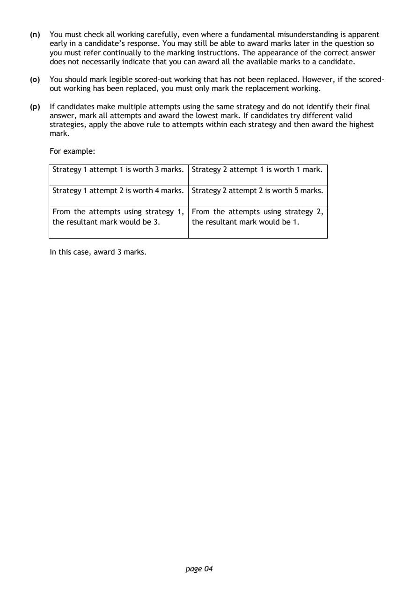
Selectable page text
(n) You must check all working carefully, even where a fundamental misunderstanding is apparent
early in a candidate’s response. You may still be able to award marks later in the question so
you must refer continually to the marking instructions. The appearance of the correct answer
does not necessarily indicate that you can award all the available marks to a candidate.
(o) You should mark legible scored-out working that has not been replaced. However, if the scored-
out working has been replaced, you must only mark the replacement working.
(p) If candidates make multiple attempts using the same strategy and do not identify their final
answer, mark all attempts and award the lowest mark. If candidates try different valid
strategies, apply the above rule to attempts within each strategy and then award the highest
mark.
For example:
Strategy 1 attempt 1 is worth 3 marks. Strategy 2 attempt 1 is worth 1 mark.
Strategy 1 attempt 2 is worth 4 marks. Strategy 2 attempt 2 is worth 5 marks.
From the attempts using strategy 1, From the attempts using strategy 2,
the resultant mark would be 3. the resultant mark would be 1.
In this case, award 3 marks.
page 04PDF page 5
Paper 1, Question 1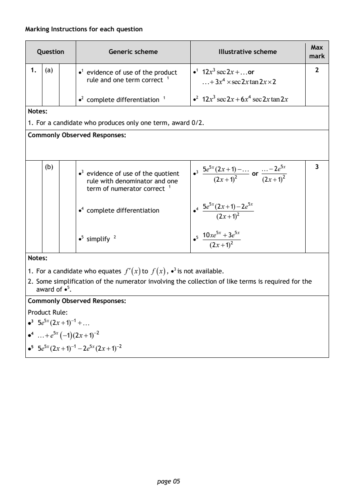
Selectable page text
Marking Instructions for each question
Max
Question Generic scheme Illustrative scheme
mark
1. (a) •1 evidence of use of the product •1 12x³sec2x+ or 2
rule and one term correct ¹ +3x⁴ ×sec2xtan2x×2
•2 complete differentiation ¹ •2 12x³sec2x+6x⁴sec2xtan2x
Notes:
1. For a candidate who produces only one term, award 0/2.
Commonly Observed Responses:
(b) 5e⁵^{x}(2x+1)− −2e⁵^{x} 3
•3 evidence of use of the quotient •3 or
rule with denominator and one
(2x+1)² (2x+1)²
term of numerator correct ¹
5e⁵^{x}(2x+1)−2e⁵^{x}
•4 complete differentiation •4
(2x+1)²
10xe⁵^{x} +3e⁵^{x}
•5 simplify ² •5
(2x+1)²
Notes:
1. For a candidate who equates f′(x)to f (x), •³ is not available.
2. Some simplification of the numerator involving the collection of like terms is required for the
award of •⁵.
Commonly Observed Responses:
Product Rule:
•3 5e⁵^{x}(2x+1)⁻¹+
•4 +e⁵^{x}(−1)(2x+1)⁻²
•5 5e⁵^{x}(2x+1)⁻¹−2e⁵^{x}(2x+1)⁻²
page 05PDF page 6
Paper 1, Question 2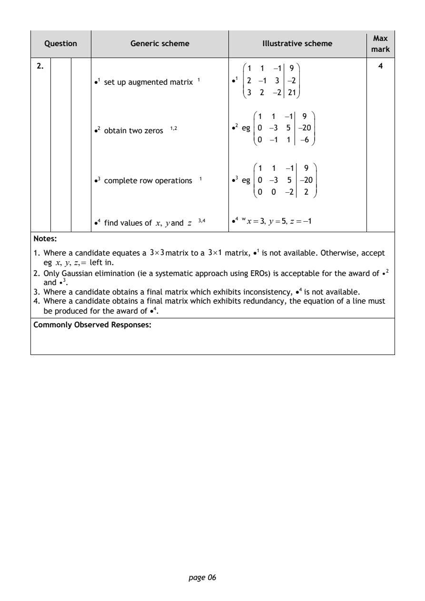
Selectable page text
Max
Question Generic scheme Illustrative scheme
mark
2. 1 1 −1 9 4
•1 set up augmented matrix ¹ •1 2 −1 3 −2
3 2 −2 21
1 1 −1 9
•2 obtain two zeros ¹^{,}² •2 eg 0 −3 5 −20
0 −1 1 −6
1 1 −1 9
•3 complete row operations ¹ •3 eg 0 −3 5 −20
0 0 −2 2
•4 find values of x, yand z ³^{,}⁴ •4 wx=3, y =5, z =−1
Notes:
1. Where a candidate equates a 3×3matrix to a 3×1 matrix, •¹ is not available. Otherwise, accept
eg x, y, z,= left in.
2. Only Gaussian elimination (ie a systematic approach using EROs) is acceptable for the award of •²
and •³.
3. Where a candidate obtains a final matrix which exhibits inconsistency, •⁴ is not available.
4. Where a candidate obtains a final matrix which exhibits redundancy, the equation of a line must
be produced for the award of •⁴.
Commonly Observed Responses:
page 06PDF page 7
Paper 1, Question 3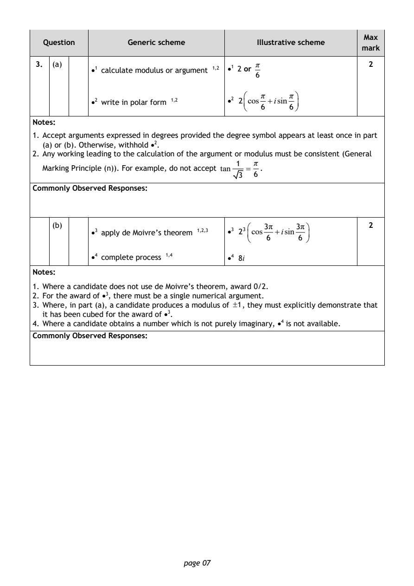
Selectable page text
Max
Question Generic scheme Illustrative scheme
mark
3. (a) π 2
•1 calculate modulus or argument ¹^{,}² •1 2 or
6
π π
•2 write in polar form ¹^{,}² •2 2 cos +isin
6 6
Notes:
1. Accept arguments expressed in degrees provided the degree symbol appears at least once in part
(a) or (b). Otherwise, withhold •².
2. Any working leading to the calculation of the argument or modulus must be consistent (General
1 π
Marking Principle (n)). For example, do not accept tan = .
3 6
Commonly Observed Responses:
(b) 3π 3π 2
•3 apply de Moivre’s theorem ¹^{,}²^{,}3 •3 2³ cos +isin
6 6
•4 complete process ¹^{,}⁴ •4 8i
Notes:
1. Where a candidate does not use de Moivre’s theorem, award 0/2.
2. For the award of •³, there must be a single numerical argument.
3. Where, in part (a), a candidate produces a modulus of ±1, they must explicitly demonstrate that
it has been cubed for the award of •³.
4. Where a candidate obtains a number which is not purely imaginary, •⁴ is not available.
Commonly Observed Responses:
page 07PDF page 8
Paper 1, Question 4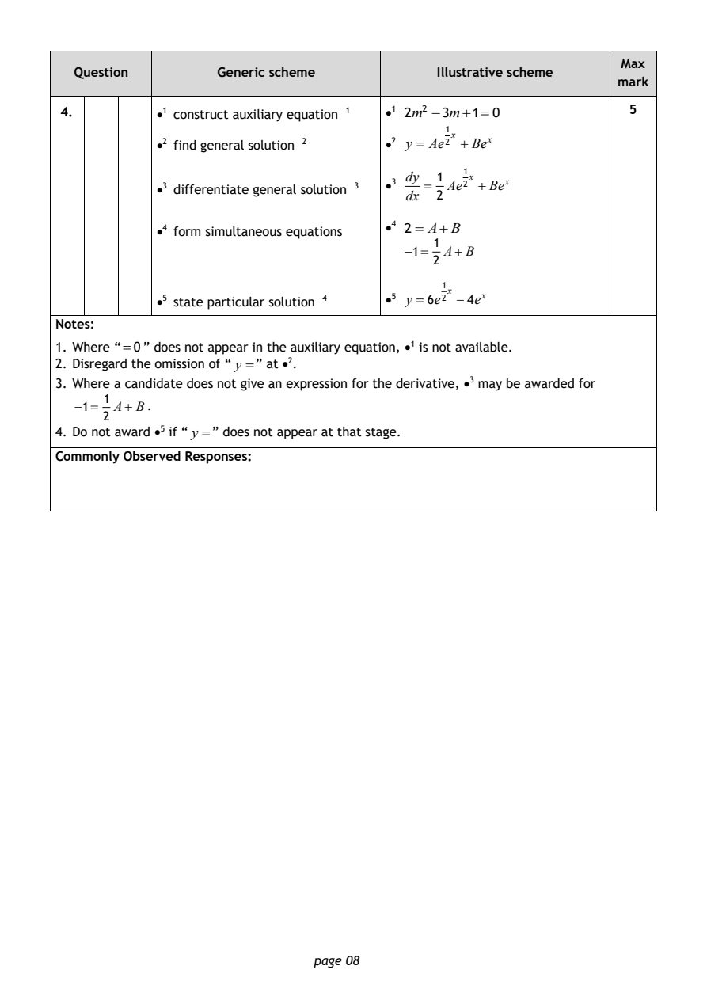
Selectable page text
Max
Question Generic scheme Illustrative scheme
mark
4. •1 construct auxiliary equation ¹ •1 2m² −3m+1=0 5
•2 find general solution ² •2 y = Ae²¹^{x} +Be^{x}
dy 1
•3 differentiate general solution ³ •3 = Ae²¹^{x} +Be^{x}
dx 2
•4 form simultaneous equations •4 2= A+B
1
−1= A+B
2
•5 state particular solution ⁴ •5 y =6e²¹^{x} −4e^{x}
Notes:
1. Where “=0” does not appear in the auxiliary equation, •¹ is not available.
2. Disregard the omission of “ y =” at •².
3. Where a candidate does not give an expression for the derivative, •³ may be awarded for
1
−1= A+B.
2
4. Do not award •⁵ if “y =” does not appear at that stage.
Commonly Observed Responses:
page 08PDF page 9
Paper 1, Question 5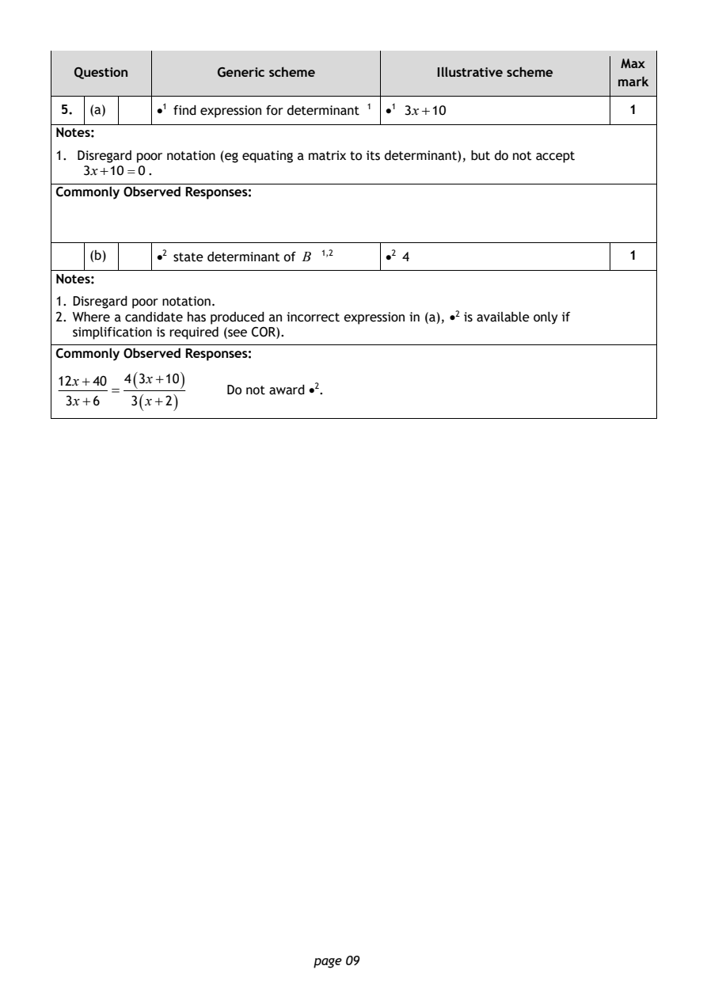
Selectable page text
Max
Question Generic scheme Illustrative scheme
mark
5. (a) •1 find expression for determinant ¹ •1 3x+10 1
Notes:
1. Disregard poor notation (eg equating a matrix to its determinant), but do not accept
3x+10=0.
Commonly Observed Responses:
(b) •2 state determinant of B ¹^{,}² •2 4 1
Notes:
1. Disregard poor notation.
2. Where a candidate has produced an incorrect expression in (a), •² is available only if
simplification is required (see COR).
Commonly Observed Responses:
12x+40
4(3x+10)
= Do not award •².
3x+6 3(x+2)
page 09PDF page 10
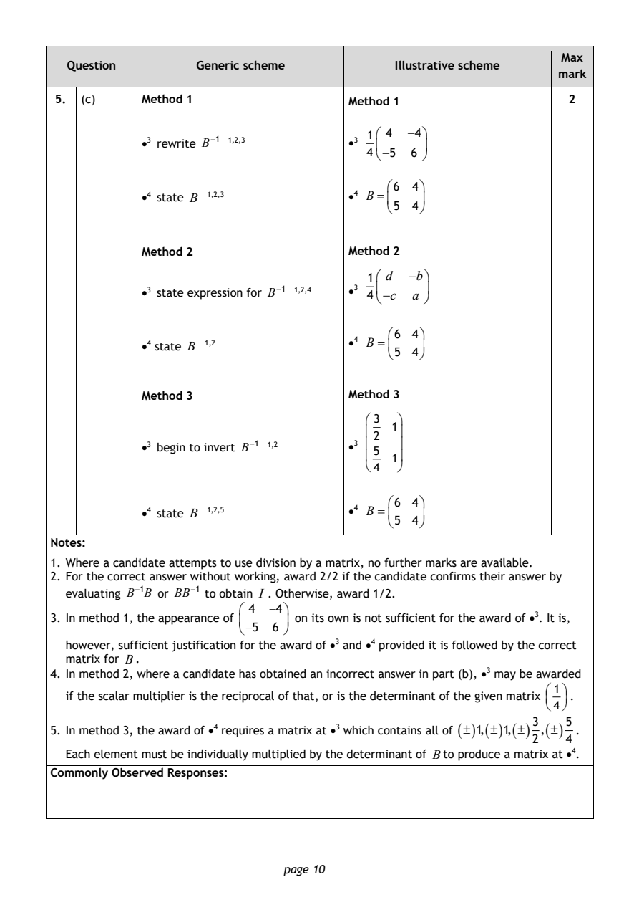
Selectable page text
Max
Question Generic scheme Illustrative scheme
mark
5. (c) Method 1 Method 1 2
1 4 −4
•3 rewrite B⁻¹ ¹,2,3 •3
4 −5 6
6 4
•4 state B ¹^{,}²^{,}3 •4 B =
5 4
Method 2 Method 2
1 d −b
•3 state expression for B⁻¹ ¹,2,4 •3 4 −c a
6 4
•4 state B ¹^{,}² •4 B =
5 4
Method 3 Method 3
3
1
2
•3 begin to invert B⁻¹ ¹,2 •3 5
1
4
6 4
•4 state B ¹^{,}²^{,}5 •4 B =
5 4
Notes:
1. Where a candidate attempts to use division by a matrix, no further marks are available.
2. For the correct answer without working, award 2/2 if the candidate confirms their answer by
evaluating B⁻¹B or BB⁻¹ to obtain I . Otherwise, award 1/2.
4 −4
3. In method 1, the appearance of on its own is not sufficient for the award of •³. It is,
−5 6
however, sufficient justification for the award of •³ and •⁴ provided it is followed by the correct
matrix for B.
4. In method 2, where a candidate has obtained an incorrect answer in part (b), •³ may be awarded
1
if the scalar multiplier is the reciprocal of that, or is the determinant of the given matrix .
4
3 5
5. In method 3, the award of •⁴ requires a matrix at •³ which contains all of
(±)1,(±)1,(±) ,(±)
.
2 4
Each element must be individually multiplied by the determinant of Bto produce a matrix at •⁴.
Commonly Observed Responses:
page 10PDF page 11
Paper 1, Question 6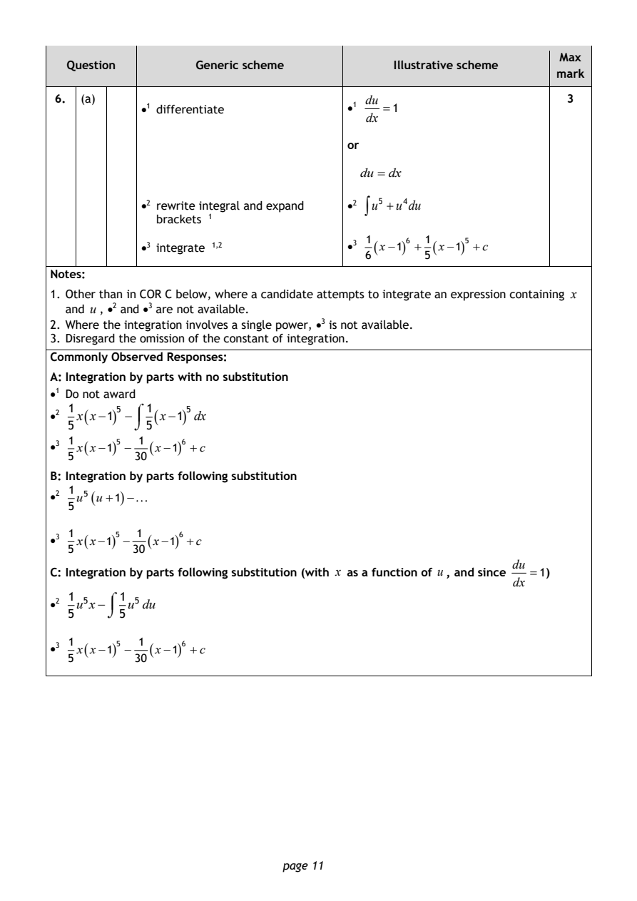
Selectable page text
Max
Question Generic scheme Illustrative scheme
mark
6. (a) du 3
•1 differentiate •1 =1
dx
or
du = dx
•2 rewrite integral and expand •2 ∫u⁵ +u⁴du
brackets ¹
1 1
•3 integrate ¹^{,}² •3 (x−1)⁶ + (x−1)⁵ +c
6 5
Notes:
1. Other than in COR C below, where a candidate attempts to integrate an expression containing x
and u, •² and •³ are not available.
2. Where the integration involves a single power, •³ is not available.
3. Disregard the omission of the constant of integration.
Commonly Observed Responses:
A: Integration by parts with no substitution
•1 Do not award
•2 1 x(x−1)⁵ − ⌠ 1 (x−1)⁵dx
5 ⌡5
1 1
•3 x(x−1)⁵ − (x−1)⁶ +c
5 30
B: Integration by parts following substitution
1
•2 u⁵(u+1)−
5
1 1
•3 x(x−1)⁵ − (x−1)⁶ +c
5 30
du
C: Integration by parts following substitution (with x as a function of u, and since =1)
dx
1 ⌠1
•2 u⁵x− u⁵du
5 ⌡5
1 1
•3 x(x−1)⁵ − (x−1)⁶ +c
5 30
page 11PDF page 12
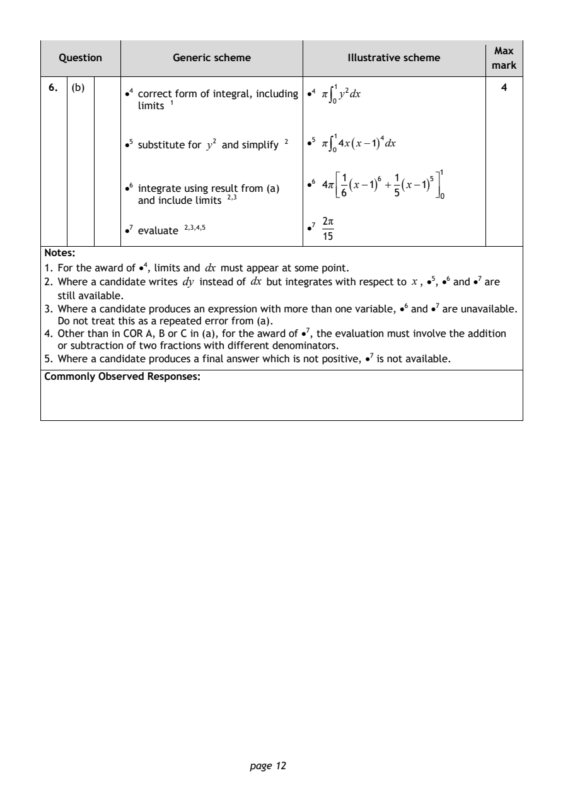
Selectable page text
Max
Question Generic scheme Illustrative scheme
mark
6. (b) 4
•4 correct form of integral, including •⁴ π∫₀¹y²dx
limits ¹
•5 substitute for y² and simplify ² •5 π∫₀¹4x(x−1)⁴dx
1
1 1
•6 integrate using resul₃t from (a)
•6 4π
(x−1)⁶ + (x−1)⁵
6 5
and include limits ²^{,} 0
2π
•7 evaluate ²^{,}³^{,}4,5 •7
15
Notes:
1. For the award of •⁴, limits and dx must appear at some point.
2. Where a candidate writes dy instead of dx but integrates with respect to x, •⁵, •6 and •⁷ are
still available.
3. Where a candidate produces an expression with more than one variable, •⁶ and •⁷ are unavailable.
Do not treat this as a repeated error from (a).
4. Other than in COR A, B or C in (a), for the award of •⁷, the evaluation must involve the addition
or subtraction of two fractions with different denominators.
5. Where a candidate produces a final answer which is not positive, •⁷ is not available.
Commonly Observed Responses:
page 12PDF page 13
Paper 1, Question 7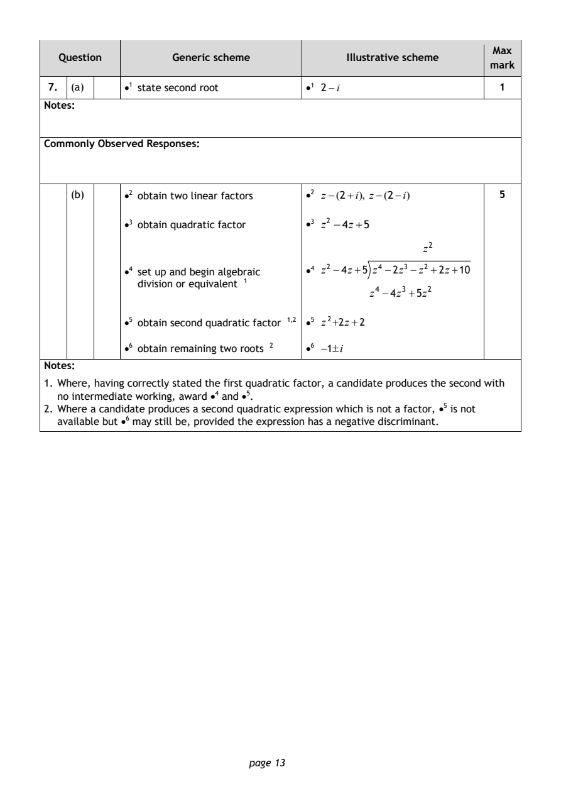
Selectable page text
Max
Question Generic scheme Illustrative scheme
mark
7. (a) •1 state second root •1 2−i 1
Notes:
Commonly Observed Responses:
(b) •2 obtain two linear factors •2 z−(2+i), z−(2−i) 5
•3 obtain quadratic factor •3 z² −4z+5
z²
•4 set up and begin algebraic •4 z² −4z+5 z⁴ −2z³ −z² +2z+10
division or equivalent ¹
z⁴ −4z³ +5z²
•5 obtain second quadratic factor ¹^{,}² •5 z²+2z+2
•6 obtain remaining two roots ² •6 −1±i
Notes:
1. Where, having correctly stated the first quadratic factor, a candidate produces the second with
no intermediate working, award •⁴ and •⁵.
2. Where a candidate produces a second quadratic expression which is not a factor, •⁵ is not
available but •⁶ may still be, provided the expression has a negative discriminant.
page 13PDF page 14
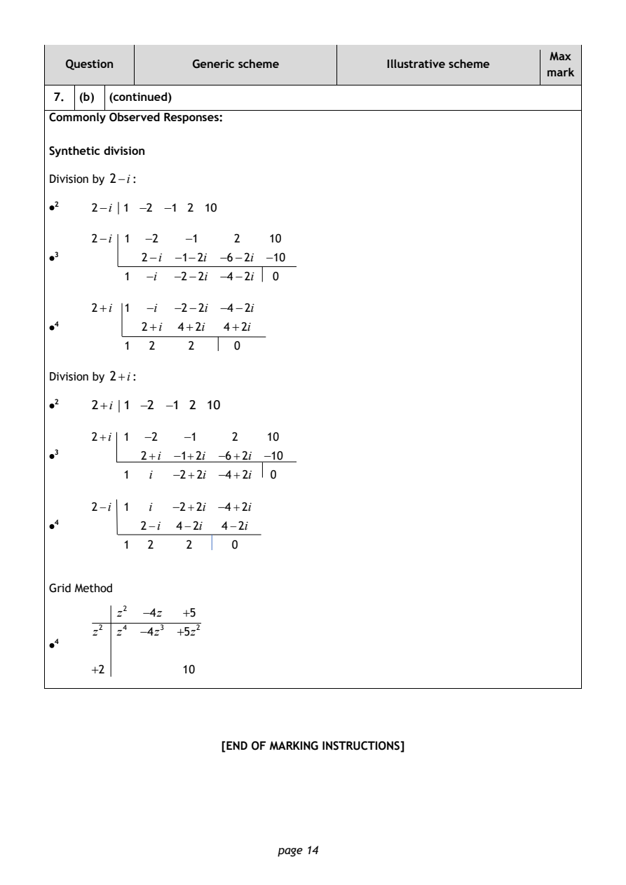
Selectable page text
Max
Question Generic scheme Illustrative scheme
mark
7. (b) (continued)
Commonly Observed Responses:
Synthetic division
Division by 2−i:
•2 2−i 1 −2 −1 2 10
2−i 1 −2 −1 2 10
•3 2−i −1−2i −6−2i −10
1 −i −2−2i −4−2i 0
2+i 1 −i −2−2i −4−2i
•4 2+i 4+2i 4+2i
1 2 2 0
Division by 2+i:
•2 2+i 1 −2 −1 2 10
2+i 1 −2 −1 2 10
•3 2+i −1+2i −6+2i −10
1 i −2+2i −4+2i 0
2−i 1 i −2+2i −4+2i
•4 2−i 4−2i 4−2i
1 2 2 0
Grid Method
z² −4z +5
z² z⁴ −4z³ +5z²
•4
+2 10
[END OF MARKING INSTRUCTIONS]
page 14